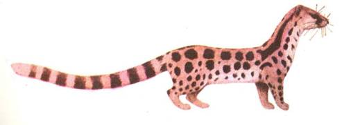

<head>
<meta http-equiv="Content-Type" content="text/html; charset=windows-1252">
<meta name="GENERATOR" content="Microsoft FrontPage 4.0">
<meta name="ProgId" content="FrontPage.Editor.Document">
<title>New Page 1</title>
<meta http-equiv="Content-Type" content="text/html; charset=windows-1252">
<meta name="GENERATOR" content="Microsoft FrontPage 4.0">
<meta name="ProgId" content="FrontPage.Editor.Document">
<title>ECONOMICALLY IMPORTANT PLANTS OF INDIA compiled by K</title>
<meta http-equiv="Content-Type" content="text/html; charset=windows-1252">
<meta name="GENERATOR" content="Microsoft FrontPage 4.0">
<meta name="ProgId" content="FrontPage.Editor.Document">
<title>ECONOMICALLY IMPORTANT PLANTS OF INDIA</title>
<meta http-equiv="Content-Type" content="text/html; charset=windows-1252">
<meta name="GENERATOR" content="Microsoft FrontPage 4.0">
<meta name="ProgId" content="FrontPage.Editor.Document">
<title>New Page 1</title>
<META HTTP-EQUIV="CONTENT-TYPE" CONTENT="text/html; charset=windows-1252">
<TITLE>Aegle marmelos </TITLE>
<META NAME="GENERATOR" CONTENT="Microsoft FrontPage 4.0">
<META NAME="CREATED" CONTENT="20010726;17265013">
<META NAME="CHANGEDBY" CONTENT="L.Sowmya">
<META NAME="CHANGED" CONTENT="20020726;13003551">
<META NAME="DESCRIPTION" CONTENT="Economically Important Plants">
<META NAME="KEYWORDS" CONTENT="Abies pindrow">
<META NAME="ProgId" CONTENT="FrontPage.Editor.Document">
<STYLE>
	<!--
		P { color: #2c9a97 }
	-->
	</STYLE>
<meta name="Microsoft Theme" content="none">
<link>
</head>

<body LANG="en-US" bgcolor="#CCCCCC" text="#009999">
<P><A NAME="begin"></A>
</P>
<table border="1" width="100%">
  <tr>
    <td width="100%" bgcolor="#1658BC">
      <P ALIGN=CENTER><b><font face="Verdana" size="6" color="#FFFFFF">Digitized
      Inventory of Animal Resources: Mammalia&nbsp;</font></b> <font color="#FFFFFF"><br>
      <b>
      Principal Investigator: Dr. R. J. B Alfred, Co-Investigator: Dr. Rama Krishna, Contributed by:
      Dr. M.S.Pradhan</b></font><br>
      </P>
    </td>
  </tr>
</table>
<p ALIGN="CENTER">&nbsp;</p>
<p ALIGN="CENTER">&nbsp;</p>
<P ALIGN=LEFT><b><font size="6" face="Comic Sans MS" color="#009999">&nbsp;&nbsp;&nbsp;&nbsp;&nbsp;&nbsp;&nbsp;&nbsp;</font><font face="Arial" size="5" color="#808000">&nbsp;&nbsp;<span style="mso-bidi-font-size: 12.0pt; mso-fareast-font-family: Times New Roman; mso-bidi-font-family: Times New Roman; mso-ansi-language: EN-US; mso-fareast-language: EN-US; mso-bidi-language: AR-SA"><a href="http://stp.unipune.ernet.in/zsi/photomap.html?code=50"><b style="mso-bidi-font-weight:normal"><i style="mso-bidi-font-style:normal"><span style="mso-ansi-font-size: 9.0pt">Prionodon
pardicolor pardicolor</span></i><span style="mso-ansi-font-size: 9.0pt">,
Hodgson</span></b></a></span>&nbsp;&nbsp;&nbsp;&nbsp;&nbsp;&nbsp;&nbsp;&nbsp;&nbsp;&nbsp;</font></b></P>
<P ALIGN=LEFT><A HREF="#Taxonomic Details"><FONT FACE="Comic Sans MS">Taxonomic 
  Details</FONT> </A><FONT FACE="Comic Sans MS"><BR>
  ----- </FONT><A HREF="#Scientific Name"><FONT FACE="Comic Sans MS">Scientific Name</FONT></A><FONT FACE="Comic Sans MS"><BR>
  ----- </FONT><A HREF="#Classification"><FONT FACE="Comic Sans MS">Classification</FONT></A><FONT FACE="Comic Sans MS"><BR>
  ----- </FONT><A HREF="#Synonyms"><FONT FACE="Comic Sans MS">Synonyms</FONT></A><FONT FACE="Comic Sans MS"><BR>
  ----- </FONT><A HREF="#Common Names"><FONT FACE="Comic Sans MS">Common Names</FONT></A><FONT FACE="Comic Sans MS"><BR>
  </FONT><A HREF="#Other Biological Details"><FONT FACE="Comic Sans MS">Other 
  Biological Details</FONT></A><FONT FACE="Comic Sans MS"><BR>
  ----- </FONT><A HREF="#Habit and Habitat"><FONT FACE="Comic Sans MS">Habit and 
  Habitat</FONT></A><FONT FACE="Comic Sans MS"><BR>
  ----- </FONT><A HREF="#Distribution"><FONT FACE="Comic Sans MS">Distribution</FONT></A><FONT FACE="Comic Sans MS"><BR>
  ---------- </FONT><A HREF="#Extend of Occurance"><FONT FACE="Comic Sans MS">Extend of
Occurrence</FONT></A><FONT FACE="Comic Sans MS"><BR>
  ---------- </FONT><A HREF="#Area of occurance"><FONT FACE="Comic Sans MS">Area of
</FONT></A><A HREF="#Area of occurance"><font face="Comic Sans MS">occurrence</font></A><FONT FACE="Comic Sans MS"><BR>
  ---------- </FONT><A HREF="#Altitude:"><FONT FACE="Comic Sans MS">Altitude</FONT></A><FONT FACE="Comic Sans MS"><BR>
  ---------- </FONT><A HREF="#Population:"><FONT FACE="Comic Sans MS">Population</FONT></A><FONT FACE="Comic Sans MS"><BR>
  ----- </FONT>
  <A HREF="#Conservation Status:"><FONT FACE="Comic Sans MS">Conservation Status</FONT></A><FONT FACE="Comic Sans MS"><BR>
  ----- </FONT>
  <A HREF="#Diagnostic Features"><FONT FACE="Comic Sans MS">Diagnostic 
  Features</FONT></A><FONT FACE="Comic Sans MS"><BR>
  ----- </FONT>
<a HREF="#Breeding system"><FONT FACE="Comic Sans MS">Breeding system</FONT></a><FONT FACE="Comic Sans MS"><BR>
  </FONT><A HREF="#Miscellaneous Information"><FONT FACE="Comic Sans MS">Miscellaneous 
  Information</FONT></A><FONT FACE="Comic Sans MS"><BR>
  </FONT><A HREF="#Literature"><FONT FACE="Comic Sans MS">Literature</FONT></A></P>
<HR SIZE=3 COLOR="#0000ff">
<P><A NAME="Taxonomic Details"></A><FONT SIZE=6><FONT FACE="Monotype Corsiva"><FONT COLOR="#1658bc"><u>Taxonomic 
  Details</u></FONT></FONT></FONT> </P>
<HR SIZE=3 COLOR="#0000ff">
<P><A NAME="Scientific Name"></A><A NAME="Classification"></A><A NAME="Synonyms"></A><A NAME="Common Names"></A> 
  <FONT FACE="Comic Sans MS, sans-serif"><U>Scientific Name</U> :&nbsp;</FONT><font face="Comic Sans MS, sans-serif">&nbsp;</font><font size="5" face="Arial" color="#808000">&nbsp;<span style="mso-bidi-font-size: 12.0pt; mso-fareast-font-family: Times New Roman; mso-bidi-font-family: Times New Roman; mso-ansi-language: EN-US; mso-fareast-language: EN-US; mso-bidi-language: AR-SA"><a href="http://stp.unipune.ernet.in/zsi/photomap.html?code=50"><b style="mso-bidi-font-weight:normal"><i style="mso-bidi-font-style:normal"><span style="mso-ansi-font-size: 9.0pt">Prionodon
pardicolor pardicolor</span></i><span style="mso-ansi-font-size: 9.0pt">,
Hodgson</span></b></a></span>&nbsp;</font></P>
<P><font face="Comic Sans MS" size="3"><U>Classification</U><b><U>:</U></b></font></P>
<blockquote>
  <blockquote>
    <blockquote>
      <blockquote>
        <blockquote>
          <blockquote>
            <blockquote>
<P><span style="mso-bidi-font-size: 12.0pt; color: black"><font size="4" face="Arial">Order:<i style="mso-bidi-font-size: 12.0pt; color: black">&nbsp;&nbsp;&nbsp;&nbsp;&nbsp;&nbsp;&nbsp;&nbsp;
</i><i style="mso-bidi-font-style:normal">Carnivora</i><o:p>
</o:p>
</font></span></P>
<P><span style="mso-bidi-font-size: 12.0pt; color: black"><font size="4" face="Arial">Family:<i style="mso-bidi-font-size: 12.0pt; color: black">&nbsp;&nbsp;&nbsp;&nbsp;&nbsp;&nbsp;&nbsp;
</i><i style="mso-bidi-font-style:normal">Viverridae</i><o:p>
</o:p>
</font></span></P>
              <span style="mso-bidi-font-size: 12.0pt; mso-fareast-font-family: Times New Roman; mso-bidi-font-family: Times New Roman; color: black; mso-ansi-language: EN-US; mso-fareast-language: EN-US; mso-bidi-language: AR-SA"><font face="Arial"><font size="4">Subfamily:<i style="mso-bidi-font-size: 12.0pt; mso-fareast-font-family: Times New Roman; mso-bidi-font-family: Times New Roman; color: black; mso-ansi-language: EN-US; mso-fareast-language: EN-US; mso-bidi-language: AR-SA">&nbsp;
              </i><i style="mso-bidi-font-style:normal">Viverrinae</i></font></font></span>
            </blockquote>
          </blockquote>
        </blockquote>
      </blockquote>
    </blockquote>
  </blockquote>
</blockquote>
<P><font face="Comic Sans MS, sans-serif" size="3"><BR>
  <U>Synonyms</U>:&nbsp;&nbsp;&nbsp;&nbsp;&nbsp;&nbsp;&nbsp;&nbsp;&nbsp;&nbsp;&nbsp;&nbsp;&nbsp;&nbsp;&nbsp;</font><font size="4" face="Arial">
<i style="mso-bidi-font-style:normal"><span style="mso-bidi-font-size: 12.0pt; mso-fareast-font-family: Times New Roman; mso-bidi-font-family: Times New Roman; color: black; mso-ansi-language: EN-US; mso-fareast-language: EN-US; mso-bidi-language: AR-SA">Prionodon pardicolor, Hodgson</span></i> </font></P>
<P><font face="Comic Sans MS, sans-serif" size="3"><BR>
  <U>Common Names</U><SPAN STYLE="text-decoration: none">:&nbsp;</SPAN></font><FONT FACE="Comic Sans MS, sans-serif"><SPAN STYLE="text-decoration: none">&nbsp;&nbsp;&nbsp;&nbsp;&nbsp;&nbsp;</SPAN></FONT><font face="Arial" size="4"><span style="mso-bidi-font-size: 12.0pt; color: black">Spotted Linsang&nbsp;<i style="font-size: 10.0pt; mso-bidi-font-size: 12.0pt; color: black">&nbsp;&nbsp;
</i><i style="mso-bidi-font-style:
normal">Regional Names:</i>&nbsp;English: Tiger
civet, Bhotia: Zik chum, Lepcha: Suilyu, Silu<span style="mso-bidi-font-size: 12.0pt; mso-fareast-font-family: Arial Unicode MS; color: black"><o:p>
</span>
</span></font><span style="font-size:
9.0pt;mso-bidi-font-size:12.0pt;font-family:Verdana;mso-fareast-font-family:
&quot;Arial Unicode MS&quot;;color:black">
</o:p>
</span>
</P>
<P><FONT FACE="Comic Sans MS, sans-serif"><SPAN STYLE="text-decoration: none">
<b><font size="4" color="#000000">
  <BR>
</font></b>
  </SPAN></FONT><font face="Comic Sans MS"><BR>
  </font><BR>
</P>
<P ALIGN=RIGHT><A HREF="#begin"><U><FONT FACE="Comic Sans MS">Back to
Top</FONT></U></A></P>
<HR SIZE=3 COLOR="#0000ff">
<P><A NAME="Other Biological Details"></A><FONT SIZE=3><FONT SIZE=6><FONT FACE="Monotype Corsiva"><FONT COLOR="#1658bc"><u>Other 
  Biological Details</u></FONT></FONT></FONT></FONT> 
</P>
<p class="MsoNormal" style="text-align:justify"><font size="4" face="Arial"><b><i style="mso-bidi-font-style:
normal"><span style="mso-bidi-font-size: 12.0pt"><font color="#FF0000">Threats:&nbsp;</font></span></i><span style="mso-bidi-font-size: 12.0pt"><font color="#FF0000">
</font></span></b><span style="mso-bidi-font-size: 12.0pt; color: black"> Interspecific
Competition, Loss of Habitat, Hunting, Unknown threats for which information is
not available (Anonymous, 1994).;&nbsp;<i style="mso-bidi-font-style:normal">Effect
of threats on population (Perceived or inferred)</i>:&nbsp;Declining<span style="font-size:9.0pt;mso-bidi-font-size:12.0pt;font-family:Verdana;
mso-fareast-font-family:&quot;Arial Unicode MS&quot;;color:black"><o:p>
</o:p>
</span></span></font></p>
<p class="MsoNormal"><font size="4" face="Arial"><b><span style="mso-bidi-font-size: 12.0pt"><font color="#FF0000">&nbsp;<i style="mso-bidi-font-style:
normal">Trade:&nbsp;</i> </font></span></b><span style="mso-bidi-font-size: 12.0pt; color: black"> Local;&nbsp;<i style="mso-bidi-font-style:normal">Parts
in trade</i>:&nbsp;Not Known;&nbsp;<i style="mso-bidi-font-style:normal">Effect
of trade on population (Perceived or inferred)</i>:&nbsp;Declining<span style="font-size:9.0pt;mso-bidi-font-size:
12.0pt;font-family:Verdana;mso-fareast-font-family:&quot;Arial Unicode MS&quot;;
color:black"><o:p>
</o:p>
</span></span></font></p>
<P>&nbsp; 
</P>
<HR SIZE=3 COLOR="#0000ff">
<P STYLE="margin-bottom: 0cm"><A NAME="Habit and Habitat"></A><U><FONT FACE="Comic Sans MS">HABIT 
  &amp; HABITAT</FONT></U></P>
<P STYLE="margin-bottom: 0cm"><font face="Arial" size="4">&nbsp;<span style="font-size:9.0pt;
mso-bidi-font-size:12.0pt;font-family:Verdana;color:black">Spotted linsang a
most uncommon civet prefers to live in mountain and hilly forests. Not a
gregarious species. It moves freely on ground and trees, both. It preys chiefly
on insects, small birds and mammals . As per zoo records it breeds twice in a
year (Feb to Aug) and the litter consist of two young ones (Anonymous, 1994)
Linsang shows feline characteristics (spotted body, retractile claws etc.) and
behaviour (spring and climb on a tree and live mainly by hunting) Linsang is
reported to take shelter in the hollows of decayed trees.</span><span style="mso-bidi-font-size: 12.0pt; mso-fareast-font-family: Arial Unicode MS; color: black"><o:p>
</o:p>
</span></font></P>
<p class="MsoNormal"><font face="Arial" size="4"><span style="mso-bidi-font-size: 12.0pt; color: black">&nbsp;</span><font color="#008000"><b><i style="mso-bidi-font-style:
normal"><span style="mso-bidi-font-size: 12.0pt">Habitat Structure:</span></i><span style="mso-bidi-font-size: 12.0pt">&nbsp;</span></b></font><span style="font-size:9.0pt;
mso-bidi-font-size:12.0pt;font-family:Verdana;color:black">Hilly,
mountainous temperate, coniferous and tropical rain forests. There is a general
decrease in the habitat structure</span><span style="mso-bidi-font-size: 12.0pt; mso-fareast-font-family: Arial Unicode MS; color: black"><o:p>
</span></font><font face="Comic Sans MS" size="3"><span style="font-size:9.0pt;
mso-bidi-font-size:12.0pt;font-family:Verdana;mso-fareast-font-family:&quot;Arial Unicode MS&quot;;
color:black">
</o:p>
</span></p>
<p class="MsoNormal" style="margin-left:1.0in;text-align:justify;text-indent:
-1.0in">&nbsp;&nbsp;<b>&nbsp;&nbsp;&nbsp;&nbsp;&nbsp;&nbsp;&nbsp;&nbsp;&nbsp;&nbsp;&nbsp;&nbsp;&nbsp;</b></p>
</font>
<p>&nbsp;</p>
<p align=RIGHT style="margin-bottom: 0cm"><font face="Comic Sans MS" size="3"><a href="#begin">Back 
  to Top</a></font></p>
<P STYLE="margin-bottom: 0cm">&nbsp;</P>
<P><font size="3"><A NAME="Distribution"></A><A NAME="Extend of Occurance"></A><A NAME="Area of occurance:"></A><A NAME="Altitude:"></A><A NAME="Population:"></a><A NAME="Conservation status:"></A> 
  <FONT FACE="Comic Sans MS"><U>Distribution</U>:</FONT></font></P>
<blockquote>
  <blockquote>
    <blockquote>
      <blockquote>
        <blockquote>
<p class="MsoNormal" style="margin-left:1.0in;text-align:justify;text-indent:
-1.0in"><font face="Arial" size="4"><span style="mso-bidi-font-size: 12.0pt; mso-fareast-font-family: Times New Roman; mso-bidi-font-family: Times New Roman; color: black; mso-ansi-language: EN-US; mso-fareast-language: EN-US; mso-bidi-language: AR-SA">Sikkim, Assam and Arunachal Pradesh</span></font></p>
<p class="MsoNormal" style="margin-left:1.0in;text-align:justify;text-indent:
-1.0in"><font face="Arial" size="4"><span style="mso-bidi-font-size: 12.0pt; mso-fareast-font-family: Times New Roman; mso-bidi-font-family: Times New Roman; mso-ansi-language: EN-US; mso-fareast-language: EN-US; mso-bidi-language: AR-SA"><font color="#008000"><b><i style="mso-bidi-font-style:normal">No.</i><i style="mso-bidi-font-style: normal; mso-bidi-font-size: 12.0pt; mso-fareast-font-family: Times New Roman; mso-bidi-font-family: Times New Roman; mso-ansi-language: EN-US; mso-fareast-language: EN-US; mso-bidi-language: AR-SA">
</i><i style="mso-bidi-font-style:normal">of Locations:&nbsp;</i></b></font></span><span style="mso-bidi-font-size: 12.0pt; mso-fareast-font-family: Times New Roman; mso-bidi-font-family: Times New Roman; color: black; mso-ansi-language: EN-US; mso-fareast-language: EN-US; mso-bidi-language: AR-SA">13 locations ;&nbsp;<i style="mso-bidi-font-style:normal">Type:&nbsp;</i>Fragmented</span></font></p>
        </blockquote>
      </blockquote>
    </blockquote>
  </blockquote>
</blockquote>
<P><font face="Comic Sans MS" size="3"><U>Extend of </U><u>Occurrence&nbsp;&nbsp;&nbsp;</u>&nbsp;&nbsp;&nbsp;&nbsp;&nbsp;&nbsp;&nbsp;&nbsp;
</font><span style="mso-bidi-font-size: 12.0pt; mso-fareast-font-family: Times New Roman; mso-bidi-font-family: Times New Roman; color: black; mso-ansi-language: EN-US; mso-fareast-language: EN-US; mso-bidi-language: AR-SA"><font face="Arial" size="4">10001-20000
sq.kms.</font></span><font face="Comic Sans MS" size="3"><BR>
  </font><font size="3"><BR>
  </font><font face="Comic Sans MS" size="3"><U>Area of occurrence:&nbsp;&nbsp;&nbsp;</U>&nbsp;&nbsp;&nbsp;&nbsp;&nbsp;&nbsp;&nbsp;&nbsp;&nbsp;&nbsp;&nbsp;&nbsp;
</font><font face="Arial" size="4"><span style="mso-bidi-font-size: 12.0pt; color: black">501-2000
sq.kms.<span style="mso-bidi-font-size: 12.0pt; mso-fareast-font-family: Arial Unicode MS; color: black"><o:p>
</span> 
</span></font><span style="font-size:9.0pt;mso-bidi-font-size:12.0pt;font-family:Verdana;
mso-fareast-font-family:&quot;Arial Unicode MS&quot;;color:black"><font face="Comic Sans MS" size="3">
</o:p>
  </font>
</span> 
</P>
<P STYLE="margin-bottom: 0cm"><font face="Comic Sans MS" size="3"><U>Altitude:</U></font><font color="#000000" face="Comic Sans MS" size="4">&nbsp;&nbsp;&nbsp;&nbsp;&nbsp;&nbsp;&nbsp;&nbsp;&nbsp;&nbsp;&nbsp;&nbsp;&nbsp;&nbsp;&nbsp;&nbsp;&nbsp;&nbsp;&nbsp;&nbsp;&nbsp;&nbsp;&nbsp;&nbsp;&nbsp;</font><font color="#000000" face="Arial" size="4">&nbsp;
<span style="font-size:9.0pt;
mso-bidi-font-size:12.0pt;font-family:Verdana;color:black">150- 2750m</span><span style="mso-bidi-font-size: 12.0pt; mso-fareast-font-family: Arial Unicode MS; color: black"><o:p>
</o:p>
</span></font><font face="Comic Sans MS" size="3"><BR>
  <BR>
  <U>Population:</U>&nbsp; </font></P>
<p class="MsoNormal" style="text-align:justify"><font face="Arial" size="4"><i style="mso-bidi-font-style:
normal"><b><span style="mso-bidi-font-size: 12.0pt"><font color="#008000">Global Population:</font></span></b><span style="mso-bidi-font-size: 12.0pt; color: black">&nbsp;</span></i><span style="mso-bidi-font-size: 12.0pt; color: black">Not Known;&nbsp;<i style="mso-bidi-font-style:normal">No.</i><i style="mso-bidi-font-style: normal; mso-bidi-font-size: 12.0pt; color: black">
</i><i style="mso-bidi-font-style:normal">of
mature individuals in all the populations:&nbsp;</i>Not known<span style="font-size:9.0pt;
mso-bidi-font-size:12.0pt;font-family:Verdana;mso-fareast-font-family:&quot;Arial Unicode MS&quot;;
color:black"><o:p>
</o:p>
</span></span></font></p>
<p class="MsoNormal"><font face="Arial" size="4"><span style="mso-bidi-font-size: 12.0pt; color: black">&nbsp;</span><i style="mso-bidi-font-style:
normal"><b><span style="mso-bidi-font-size: 12.0pt"><font color="#008000">Captive Population:</font></span></b><span style="mso-bidi-font-size: 12.0pt; color: black">&nbsp;</span></i><span style="mso-bidi-font-size: 12.0pt; color: black">None in India, 3 males in Zoos abroad (CAMP Report, 1998)<span style="font-size:9.0pt;mso-bidi-font-size:12.0pt;font-family:Verdana;
mso-fareast-font-family:&quot;Arial Unicode MS&quot;;color:black"><o:p>
</o:p>
</span></span></font></p>
<p class="MsoNormal"><font face="Arial" size="4"><span style="mso-bidi-font-size: 12.0pt; color: black">&nbsp;</span><i style="mso-bidi-font-style:
normal"><b><span style="mso-bidi-font-size: 12.0pt"><font color="#008000">Life span:&nbsp;</font></span></b></i><span style="mso-bidi-font-size: 12.0pt; color: black"> (Wild):&nbsp;Not
Known;&nbsp;(Captivity):&nbsp;Not Known<span style="font-size:9.0pt;
mso-bidi-font-size:12.0pt;font-family:Verdana;mso-fareast-font-family:&quot;Arial Unicode MS&quot;;
color:black"><o:p>
</o:p>
</span></span></font></p>
<font face="Arial" size="4">
<i style="mso-bidi-font-style:normal"><b><span style="mso-bidi-font-size: 12.0pt; mso-fareast-font-family: Times New Roman; mso-bidi-font-family: Times New Roman; mso-ansi-language: EN-US; mso-fareast-language: EN-US; mso-bidi-language: AR-SA"><font color="#008000">Population Trend:</font></span></b><span style="mso-bidi-font-size: 12.0pt; mso-fareast-font-family: Times New Roman; mso-bidi-font-family: Times New Roman; color: black; mso-ansi-language: EN-US; mso-fareast-language: EN-US; mso-bidi-language: AR-SA">&nbsp;</span></i><span style="mso-bidi-font-size: 12.0pt; color: black"><span style="font-size:9.0pt;mso-bidi-font-size:12.0pt;font-family:Verdana;
mso-fareast-font-family:&quot;Times New Roman&quot;;mso-bidi-font-family:&quot;Times New Roman&quot;;
color:black;mso-ansi-language:EN-US;mso-fareast-language:EN-US;mso-bidi-language:
AR-SA">Declining</span>
</span></font>
<P STYLE="margin-bottom: 0cm">&nbsp;</P><P STYLE="margin-bottom: 0cm"><font face="Comic Sans MS" size="3"><U>Conservation status:&nbsp;&nbsp;&nbsp;</U>&nbsp;&nbsp;&nbsp;&nbsp;&nbsp;&nbsp;&nbsp;&nbsp;
</font><font face="Arial" size="5" color="#FF0000"><b>Non Endemic <span style="mso-bidi-font-size: 12.0pt; mso-fareast-font-family: Times New Roman; mso-bidi-font-family: Times New Roman; mso-ansi-language: EN-US; mso-fareast-language: EN-US; mso-bidi-language: AR-SA"><b style="mso-bidi-font-weight:normal">Vulnerable</b></span></b></font><font face="Arial" size="4"><BR>

  <BR>
</font><font size="4"><span style="mso-tab-count: 1"><font face="Arial">
<span style="mso-tab-count:1">&nbsp;&nbsp;<i style="mso-bidi-font-style:
normal"><span style="font-size:9.0pt;mso-bidi-font-size:12.0pt;font-family:
Verdana;color:black">CITES APPENDIX:</span></i><span style="font-size:9.0pt;
mso-bidi-font-size:12.0pt;font-family:Verdana;color:black">&nbsp;I;&nbsp;<i style="mso-bidi-font-style:normal">Indian
Wildlife (Protection) Act (1972) (As </i><i style="mso-bidi-font-style: normal; mso-bidi-font-size: 12.0pt; color: black; mso-tab-count: 1">amended</i><i style="mso-bidi-font-style:normal">
</i><i style="mso-bidi-font-style: normal; mso-bidi-font-size: 12.0pt; color: black; mso-tab-count: 1">up to</i><i style="mso-bidi-font-style:normal">
2002):</i>&nbsp;Schedule I;&nbsp;Part
I;&nbsp;<i style="mso-bidi-font-style:normal">Indian Red Data Book (IUCN, 1994):</i>&nbsp;Endangered;&nbsp;<i style="mso-bidi-font-style:normal">IUCN
(1998)</i> (Proposed):&nbsp;Vulnerable (National) and Data Deficient (Global);&nbsp;</span><span style="font-size:
9.0pt;mso-bidi-font-size:12.0pt;font-family:Verdana;mso-fareast-font-family:
&quot;Arial Unicode MS&quot;;color:black"><o:p>
</o:p>
</span>&nbsp;&nbsp;&nbsp;&nbsp;&nbsp;</span></font><font face="Comic Sans MS"><span style="mso-tab-count:1">&nbsp;&nbsp;</span>
</font></span></font><font face="Comic Sans MS" size="3">
  <P STYLE="margin-bottom: 0cm"><font face="Comic Sans MS" size="3"><A NAME="Diagnostic Features"></A><A NAME="Breeding system"></A><U>DIAGNOSTIC 
  FEATURES</U>:</font></font></P>

<p class="MsoNormal" style="text-align:justify"><font face="Arial" size="4"><span style="mso-bidi-font-size: 12.0pt; color: black">Spotted Linsang is
the smallest of all the civet species. It possesses pointed muzzle, short limbs,
elongated body and retractile claws. the tail is as long as the head and body.
Scent glands absent in both sexes. The general colouration is beautiful. Rich
orange fulvous or golden colour on dorsal side. There are large black spots
arranged in longitudinal rows. Tail with 8-10 dark coloured rings.<span style="font-size:9.0pt;mso-bidi-font-size:12.0pt;font-family:Verdana;
mso-fareast-font-family:&quot;Arial Unicode MS&quot;;color:black"><o:p>
</o:p>
</span></span></font></p>
<p class="MsoNormal"><font face="Arial" size="4"><span style="mso-bidi-font-size: 12.0pt; color: black">&nbsp;</span><b><i style="mso-bidi-font-style:
normal"><span style="mso-bidi-font-size: 12.0pt"><font color="#008000">Measurements:</font></span></i><span style="mso-bidi-font-size: 12.0pt"><font color="#008000">&nbsp;</font></span></b><span style="mso-bidi-font-size: 12.0pt; color: black">(In mm): Head
and Body Length: 305-452; Tail Length: 302-402.<span style="font-size:
9.0pt;mso-bidi-font-size:12.0pt;font-family:Verdana;mso-fareast-font-family:
&quot;Arial Unicode MS&quot;;color:black"><o:p>
</o:p>
</span></span></font></p>
<p class="MsoNormal"><font face="Arial" size="4"><b><span style="mso-bidi-font-size: 12.0pt"><font color="#008000">&nbsp;<i style="mso-bidi-font-style:
normal">Weight:</i>&nbsp;</font></span></b><span style="mso-bidi-font-size: 12.0pt; color: black">(In
gms): 598-798.<span style="font-size:9.0pt;mso-bidi-font-size:12.0pt;font-family:Verdana;
mso-fareast-font-family:&quot;Arial Unicode MS&quot;;color:black"><o:p>
</o:p>
</span></span></font></p>
  <P STYLE="margin-bottom: 0cm"><font face="Comic Sans MS" size="4" color="#000000">&nbsp;</font></P>

<P ALIGN=RIGHT><A HREF="#begin"><FONT FACE="Comic Sans MS">Back to
Top</FONT></A><FONT FACE="Comic Sans MS"> </FONT>
</P>
<HR SIZE=3 COLOR="#0000ff">
<P><A NAME="Miscellaneous Information2"></A><A NAME="Miscellaneous Information1"></A>
 <FONT SIZE=6><FONT FACE="Monotype Corsiva"><FONT COLOR="#1658bc">
<U>Miscellaneous
Information</U>&nbsp;&nbsp;</FONT></FONT></FONT>
</P>
<P><b><i style="mso-bidi-font-style:
normal"><span style="mso-bidi-font-size: 12.0pt"><font face="Arial" size="4"><font color="#008000">Intraspecific variations:</font></font></span></i></b><font face="Arial" size="4"><font color="#008000"><span style="mso-bidi-font-size: 12.0pt"><b>&nbsp;</b></span></font><span style="font-size:9.0pt;mso-bidi-font-size:12.0pt;font-family:Verdana;
color:black">Out of two subspecies only <i> Prionodon pardicolor pardicolor</i>,
Hodgson occurs within Indian limits.</span><span style="font-size:9.0pt;
mso-bidi-font-size:12.0pt;font-family:Verdana;mso-fareast-font-family:&quot;Arial Unicode MS&quot;;
color:black"><o:p>
</span>
<b><span style="mso-bidi-font-size: 12.0pt; mso-fareast-font-family: Arial Unicode MS"><font color="#008000">
</o:p>
</font>
</span>
</b></font>
</P>
<P><i style="mso-bidi-font-style:normal"><b><span style="mso-bidi-font-size: 12.0pt; mso-fareast-font-family: Times New Roman; mso-bidi-font-family: Times New Roman; mso-ansi-language: EN-US; mso-fareast-language: EN-US; mso-bidi-language: AR-SA"><font color="#008000" face="Arial" size="4">Sighting Records:</font></span></b><font face="Arial" size="4"><span style="mso-bidi-font-size: 12.0pt; mso-fareast-font-family: Times New Roman; mso-bidi-font-family: Times New Roman; color: black; mso-ansi-language: EN-US; mso-fareast-language: EN-US; mso-bidi-language: AR-SA">&nbsp;</span></font></i><font face="Arial" size="4"><span style="mso-bidi-font-size: 12.0pt; font-family: Verdana; mso-fareast-font-family: Times New Roman; mso-bidi-font-family: Times New Roman; color: black; mso-ansi-language: EN-US; mso-fareast-language: EN-US; mso-bidi-language: AR-SA"> <i style="mso-bidi-font-style:
normal">Type of Sighting:</i>&nbsp;Direct and Indirect;&nbsp;<i style="mso-bidi-font-style:normal">Field
Notes:</i>&nbsp;Sighting records within Indian limits reported by Choudhury
(1999), Suresh Kumar (1999), Gupta (1999)and Chakraborthy and Sen (1991).&nbsp;</span>
</font>
</P>
<p class="MsoNormal" style="margin-left:1.0in;text-align:justify;text-indent:
-1.0in"><b><span style="mso-spacerun: yes"><font face="Arial" size="4"><font color="#008000">&nbsp;</font></font></span><font color="#008000" face="Arial" size="4"><i style="mso-bidi-font-style:
normal"><span style="font-size:9.0pt;mso-bidi-font-size:12.0pt;font-family:
Verdana;color:black">Taxon related studies recommended:&nbsp;</span></i></font></b><font face="Arial" size="4"><span style="mso-bidi-font-size: 12.0pt; font-family: Verdana; color: black"><i>In-situ</i> survey, Monitoring, Genetic studies, Life history studies,
Limiting factor research&nbsp;<o:p>
</o:p>
</span></font></p>
<i style="mso-bidi-font-style:normal"><b><span style="mso-bidi-font-size: 12.0pt; mso-fareast-font-family: Times New Roman; mso-bidi-font-family: Times New Roman; mso-ansi-language: EN-US; mso-fareast-language: EN-US; mso-bidi-language: AR-SA"><font color="#008000" face="Arial" size="4">Remarks:</font></span></b><font face="Arial" size="4"><span style="mso-bidi-font-size: 12.0pt; mso-fareast-font-family: Times New Roman; mso-bidi-font-family: Times New Roman; color: black; mso-ansi-language: EN-US; mso-fareast-language: EN-US; mso-bidi-language: AR-SA">&nbsp;</span></font></i><font face="Arial" size="4"><span style="mso-bidi-font-size: 12.0pt; mso-fareast-font-family: Times New Roman; mso-bidi-font-family: Times New Roman; color: black; mso-ansi-language: EN-US; mso-fareast-language: EN-US; mso-bidi-language: AR-SA">Very little information is available about this species, probably because
this beautiful civet was rare within Indian limits even at the beginning of the
last century. Therefore<i> in-situ</i> status survey studies of this species within
Indian jurisdiction are strongly recommended. Due to its habit of hunting small
mammals it may be playing some important role in control of the rodent species
populations.</span>
</font>
<p class="MsoNormal" style="margin-left:1.0in;text-align:justify;text-indent:
-1.0in"><span style="mso-spacerun: yes">
<font face="Comic Sans MS" size="4">
&nbsp;</font></span><span style="mso-tab-count:1"><font face="Comic Sans MS" size="4">&nbsp;&nbsp;&nbsp;&nbsp;&nbsp;</font><font face="Comic Sans MS" size="3">&nbsp;&nbsp;</font></span><font face="Comic Sans MS" size="3">&nbsp;&nbsp;&nbsp;<span style="mso-tab-count: 1">&nbsp;
</span></p>
</font>
<HR SIZE=3 COLOR="#0000ff">
<P><font face="Comic Sans MS"><span style="font-size:9.0pt;mso-bidi-font-size:12.0pt;
font-family:Verdana;mso-fareast-font-family:&quot;Times New Roman&quot;;mso-bidi-font-family:
&quot;Times New Roman&quot;;color:black;mso-ansi-language:EN-US;mso-fareast-language:
EN-US;mso-bidi-language:AR-SA"><!--[if gte vml 1]><v:shapetype id="_x0000_t75"
 coordsize="21600,21600" o:spt="75" o:preferrelative="t" path="m@4@5l@4@11@9@11@9@5xe"
 filled="f" stroked="f">
 <v:stroke joinstyle="miter"/>
 <v:formulas>
  <v:f eqn="if lineDrawn pixelLineWidth 0"/>
  <v:f eqn="sum @0 1 0"/>
  <v:f eqn="sum 0 0 @1"/>
  <v:f eqn="prod @2 1 2"/>
  <v:f eqn="prod @3 21600 pixelWidth"/>
  <v:f eqn="prod @3 21600 pixelHeight"/>
  <v:f eqn="sum @0 0 1"/>
  <v:f eqn="prod @6 1 2"/>
  <v:f eqn="prod @7 21600 pixelWidth"/>
  <v:f eqn="sum @8 21600 0"/>
  <v:f eqn="prod @7 21600 pixelHeight"/>
  <v:f eqn="sum @10 21600 0"/>
 </v:formulas>
 <v:path o:extrusionok="f" gradientshapeok="t" o:connecttype="rect"/>
 <o:lock v:ext="edit" aspectratio="t"/>
</v:shapetype><v:shape id="_x0000_i1025" type="#_x0000_t75" alt="" style='width:379.5pt;
 height:135.75pt' fillcolor="window">
 <v:imagedata src="file:///C:/DOCUME~1/jyothi/LOCALS~1/Temp/msoclip1/01/clip_image001.jpg"
  o:href="http://stp.unipune.ernet.in/zsi/images/photos/img50.jpg"/>
</v:shape><![endif]-->
<!--[if gte vml 1]><v:shapetype id="_x0000_t75"
 coordsize="21600,21600" o:spt="75" o:preferrelative="t" path="m@4@5l@4@11@9@11@9@5xe"
 filled="f" stroked="f">
 <v:stroke joinstyle="miter"/>
 <v:formulas>
  <v:f eqn="if lineDrawn pixelLineWidth 0"/>
  <v:f eqn="sum @0 1 0"/>
  <v:f eqn="sum 0 0 @1"/>
  <v:f eqn="prod @2 1 2"/>
  <v:f eqn="prod @3 21600 pixelWidth"/>
  <v:f eqn="prod @3 21600 pixelHeight"/>
  <v:f eqn="sum @0 0 1"/>
  <v:f eqn="prod @6 1 2"/>
  <v:f eqn="prod @7 21600 pixelWidth"/>
  <v:f eqn="sum @8 21600 0"/>
  <v:f eqn="prod @7 21600 pixelHeight"/>
  <v:f eqn="sum @10 21600 0"/>
 </v:formulas>
 <v:path o:extrusionok="f" gradientshapeok="t" o:connecttype="rect"/>
 <o:lock v:ext="edit" aspectratio="t"/>
</v:shapetype><v:shape id="_x0000_i1025" type="#_x0000_t75" alt="Map" style='width:201pt;
 height:225pt' fillcolor="window">
 <v:imagedata src="P%20p%20pardicolar.jpg"
  o:href="http://stp.unipune.ernet.in/zsi/images/maps/map50.jpg"/>
</v:shape><![endif]-->
</span>&nbsp;<br>
  </font></P>
<P><font size="3"><BR>
  </font><BR>
</P>
<P ALIGN=RIGHT><A HREF="#begin"><U><FONT FACE="Comic Sans MS">Back to
Top</FONT></U></A></P>
<HR SIZE=3 COLOR="#0000ff">
<P><A NAME="Literature"></A><U><FONT SIZE=6><FONT FACE="Monotype Corsiva"><FONT COLOR="#1658bc">Literature</FONT></FONT></FONT></U>
</P>
<p><font face="Arial" size="4" color="#000000"><span style="mso-bidi-font-size: 12.0pt">Alfred,
J. R. B.; Sinha, N. K. and Chakraborty, S. &nbsp;2002&nbsp;Checklist of mammals
of India &nbsp;<i style="mso-bidi-font-style:normal">Rec. Zool. surv. India Occ.
Paper No. </i>&nbsp;<b style="mso-bidi-font-weight:normal">199</b>:&nbsp;289pp.&nbsp;<br>
<span style="mso-spacerun: yes">&nbsp;</span>Anonymous.&nbsp;1994&nbsp;<i style="mso-bidi-font-style:normal">The
Red Data Book on Indian Animals Part-I Vertebrates </i>&nbsp;534pp.&nbsp;Publisher:&nbsp;Director,
Zoological Survey of India, Kolkata. &nbsp;<br>
Chakraborty, S. and Sen, A. K.&nbsp;1991&nbsp;Mammals of the Mehao Wildlife
Sanctuary (Dibang valley, Arunachal Pradesh) with remarks on their status &nbsp;<i style="mso-bidi-font-style:normal">Rec.
Zoo. surv. India </i>&nbsp;<b style="mso-bidi-font-weight:normal">88</b>:&nbsp;(3
&amp; 4):&nbsp;263-285&nbsp;<br>
Choudhury, Anwaruddin &nbsp;1999&nbsp;Mustelids , Viverrids and Herpestids of
Noth Eastern India&nbsp;<b style="mso-bidi-font-weight:normal">IN</b>&nbsp;<i style="mso-bidi-font-style:normal">ENVIS
Bulletin: Wildlife and Protected areas: Mustelids, Viverrids and Herpestids of
India</i>&nbsp;<b style="mso-bidi-font-weight:normal">2(2)</b>:&nbsp;43-47&nbsp;Publisher:&nbsp;Wildlife
Institute of India, Dehra Dun, Editor: S.A.Hussain.&nbsp;<br>
Gupta, A. K. &nbsp;1999&nbsp;Mustelids, Viverrids and Herpestids of Tripura&nbsp;<b style="mso-bidi-font-weight:normal">IN</b>&nbsp;<i style="mso-bidi-font-style:normal">ENVIS
Bulletin: Wildlife and Protected areas: Mustelids, Viverrids and Herpestids of
India</i>&nbsp;<b style="mso-bidi-font-weight:normal">2(2)</b>:&nbsp;54-58&nbsp;Publisher:&nbsp;Wildlife
Institute of India, Dehra Dun, Editor: S. A. Hussain.&nbsp;<br>
Hussain, S. A. &nbsp;1999&nbsp;Mustelids, Viverrids and Herpestids of India:
Species Profile and Conservation Status &nbsp;<b style="mso-bidi-font-weight:
normal">IN</b>&nbsp;<i style="mso-bidi-font-style:normal">ENVIS Bulletin:
Wildlife and Protected areas: Mustelids, Viverrids and Herpestids of India </i>&nbsp;<b style="mso-bidi-font-weight:normal">2(2)</b>:&nbsp;1-38.&nbsp;Publisher:&nbsp;Wildlife
Institute of India, Dehra Dun, Editor: S. A. Hussain. &nbsp;<br>
Molur, S.; Nameer, P. O. and Walker, S.&nbsp;1998&nbsp;<i style="mso-bidi-font-style:
normal">Report of the workshop” Conservation Assessment and Management Plan
for Mammals of India.” (BCPP- Endangered Species Project) </i>&nbsp;176pp.&nbsp;Publisher:&nbsp;ZooOutrach
Organization, Conservation , Breeding Specialist Group, India, Coimbatore,
India. &nbsp;<br>
Prater, S. H. &nbsp;1980&nbsp;<i style="mso-bidi-font-style:normal">The Book of
Indian Animals </i>&nbsp;316&nbsp;Publisher:&nbsp;Bombay Natural History
Society, Mumbai.<br>
Sureshkumar, R. &nbsp;1999&nbsp;Locality records of Mustellids, Viverrids and
Herpestids from Arunachal Pradesh &nbsp;<b style="mso-bidi-font-weight:normal">IN</b>&nbsp;<i style="mso-bidi-font-style:normal">ENVIS
Bulletin: Wildlife and Protected areas: Mustelids, Viverrids and Herpestids of
India</i>&nbsp;<b style="mso-bidi-font-weight:normal">2(2)</b>:&nbsp;48-54&nbsp;Publisher:&nbsp;Wildlife
Institute of India, Dehra Dun, Editor: S . A. Hussain.<o:p>
</o:p>
</span></font></p>
<font face="Arial" size="4" color="#000000">
<span style="mso-bidi-font-size: 12.0pt; mso-fareast-font-family: Times New Roman; mso-bidi-font-family: Times New Roman; mso-ansi-language: EN-US; mso-fareast-language: EN-US; mso-bidi-language: AR-SA">Tikader,
B. K. &nbsp;1999&nbsp;<i style="mso-bidi-font-style:normal">Threatened Animals
of India</i>&nbsp;307pp.&nbsp;Publisher:&nbsp;Director, Zoological Survey of
India, Kolkata.&nbsp;</span>
</font>
<P>&nbsp;
</P>
<HR SIZE=3 COLOR="#0000ff">
<P><font face="Comic Sans MS"><br>
  </font><font size="2" color="#009999"><b><font face="Comic Sans MS"></font></b></font></P>
<p align="right"><font size="3" color="#009999"><b><font face="Comic Sans MS"></font></b></font></p>
<div align="right"><font color="#009999"><b><font face="Comic Sans MS" size="2"></font></b></font></div>
<P><BR>
  <BR>
</P>
<P ALIGN=RIGHT><A HREF="#begin"><U><font face="Comic Sans MS">Back to Top</font></U></A></P>

</body>

<!DOCTYPE HTML PUBLIC "-//W3C//DTD HTML 3.2//EN">
